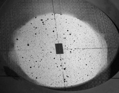
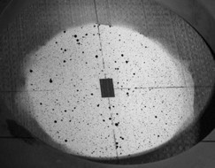

Automotive application: stronger, lighter steels
- Goal: relate stress and strain at same point on material
- Problem: measurements are incompatible!
- Solution: measure surroundings; infer in the gap
Charles R. Hogg III

Automotive application: stronger, lighter steels


Ehlschlaeger, Shortridge, Goodchild (ESG)


\[\text{Cor}(t_1, t_2) = 0 \;\;\;\;\;\;\;\;\;\; \text{:-)}\]

\[\text{Cor}(t_1, t_2) = 0 \;\;\;\;\;\;\;\;\;\; \text{:-)}\] \[\text{Cor}(t_{1.5}, t_{2.5}) = \frac{1}{2} \;\;\;\;\;\; \text{:-(} \;\;\, \]